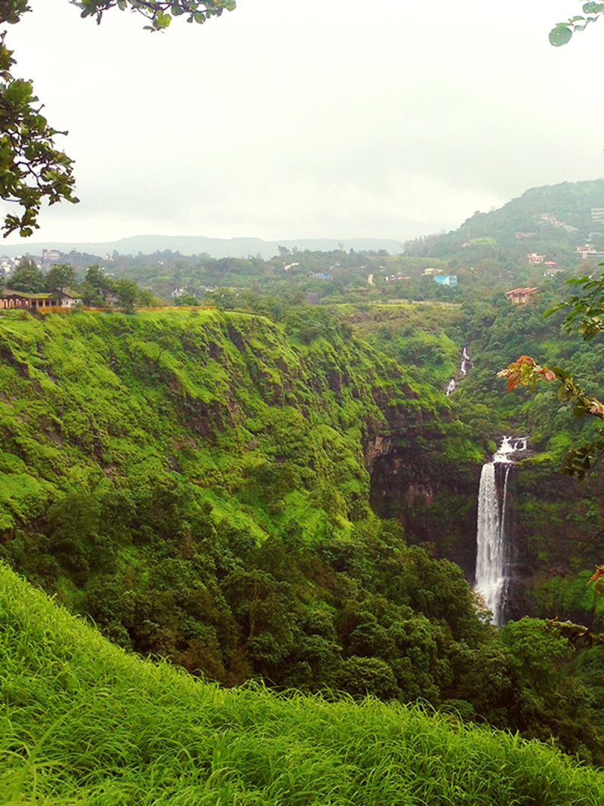

LONAVALA , MAHARASHTRA

Lonavala is a hill station town and a Municipal Council in the Pune district, Maharashtra, India. It is about 64 km (40 miles) west of Pune and 96 km (60 miles) to the east of Mumbai. It is known for its production of the hard candy chikki and is also a major stop on the railway line connecting Mumbai and Pune. From the Pune suburbs, local trains are available from Pune Junction. Both the Mumbai-Pune Expressway as well as the Mumbai-Bengaluru highway pass through Lonavala.
Present day Lonavala was a part of the Seuna (Yadava) dynasty.
Later, the Mughals realised the strategic importance of the region and kept the region for an extended time. The forts in the region and the "Mavala" warriors played an important role in the history of the Maratha Empire and that of the Peshwas. In 1871, the Lonavala and Khandala hill stations were discovered by Lord Elphinstone, who was the Governor of Bombay Presidency at the time.